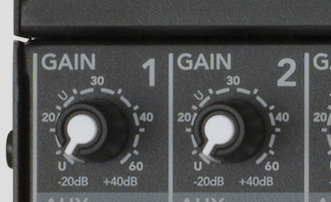
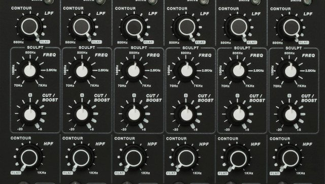
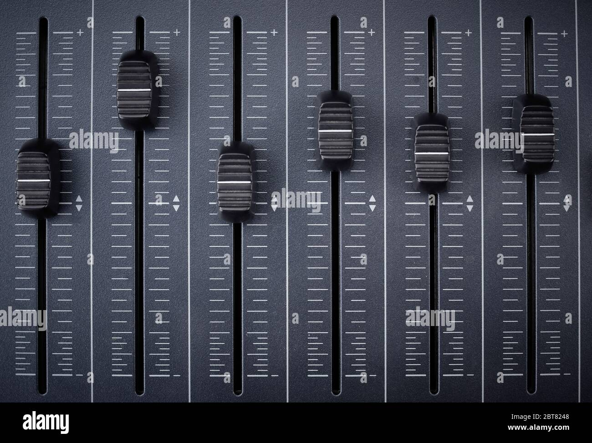

What is a mixer?
Mixers are used in many different ways, but each is designed with the same purpose: to receive inputs and send them to outputs. Before you start making connections, let’s start by learning how mixers work
How mixers work?
Before making connections and powering on your new mixer, let’s learn a bit about how mixers work. Essentially every mixer functions the same way: combine input signals from microphones or instruments and send them to outputs jacks connected to loudspeakers. What differentiates one mixer from another is how you navigate it and additional features or I/O
The first thing to do with your new mixer is to review its layout or configuration. Start with the basics, such as connecting a microphone and getting sound out. Microphones will pass through the Gain, Equalization, and Level controls before being sent to the Main Mix and main outputs. Once you’ve finished this guide, practice setting your system up before taking it to the stage. This will help you better understand the mixer and prevent any unexpected surprises at your next event. We’ve broken down the main sections and parts you need to know below.
.jpg)
GAIN button
You may see two knobs called “Gain” and “Trim” on a mixer and think they are the same thing. Often you would be right if you are used to analog mixers and preamps. On DL mixers, as well as many other digital consoles, the gain control is used to bring the input signal from the source up to a nominal level in the same way as any analog device. Specifically, the gain determines how much the analog audio signal is amplified by the preamp.
EQUALIZER
Equalization – or EQ – is one of the most well-known forms of audio processing in music production. With EQ, you can adjust the volume level of a frequency (or range of frequencies) within a sound, which in turn allows you to cure a sound – or sometimes even entire songs – of its imperfections. This is done by cutting unwanted frequencies and/or boosting others, all to balance out sounds so they work well with one another.
MAIN FADER
An audio fader is a type of control found on an audio mixer that adjusts the volume of an audio signal. It typically consists of a sliding lever or knob that can be moved up or down to increase or decrease the volume. Audio faders are an essential part of an audio mixer, as they allow you to control the volume of individual audio channels and the overall mix.
MIXER QUICKSTART
To quickly learn how to start using your own mixer console, we recommend watching the video below.
Copyright 2023 Audio Education, all rights reserved.
FOLLOW US ON